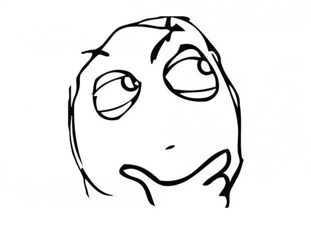
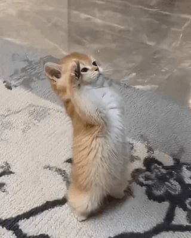
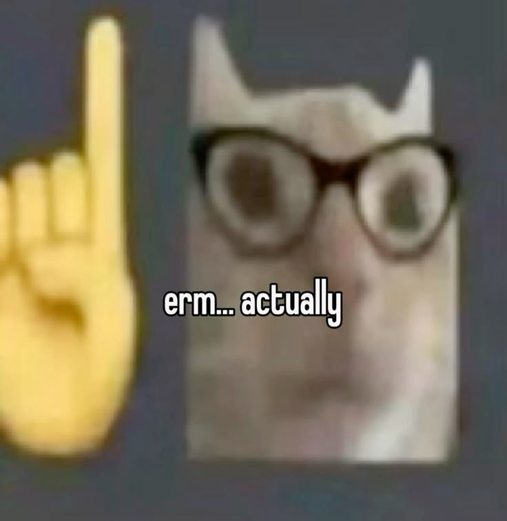

Wer ist dieser Typ?
...hast du dich vielleicht gefragt.
Darf ich mich kurz vorstellen!


Hi,
ich bin Noah — ein extrem technikbegeisterter Schüler aus Österreich. Man könnte sagen, ich bin ein echter Allrounder, wenn es um Technologie und digitale Gestaltung geht.
Warum?
Ich beschäftige mich seit Jahren intensiv mit einer breiten Palette an Themen: Vollformat-Fotografie & Bildbearbeitung, moderne Webentwicklung, Software-Entwicklung, 3D-Druck, Computer-Hardware, lokale KI-Modelle, eigene Server-Systeme, Docker und (Arch) Linux.
Natürlich zählen handfeste Ergebnisse
Hier ist ein Auszug aus meinen bisherigen Meilensteinen & Zertifikaten:
- Robot System Integration Challenge – 3. Platz (Fanuc Challenge)
- Intensiv-Workshop eDrive Robotik (DigiCamp)
- Intensiv-Workshop Movie Making (DigiCamp)
Zertifikate und Nachweise zeige ich gerne auf Anfrage.

Möchtest du mehr erfahren oder planst du ein gemeinsames Projekt? Schreib mir gerne per E-Mail oder folge mir auf Instagram (@prism_noah).